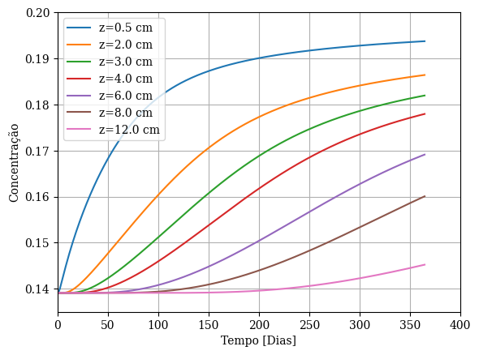
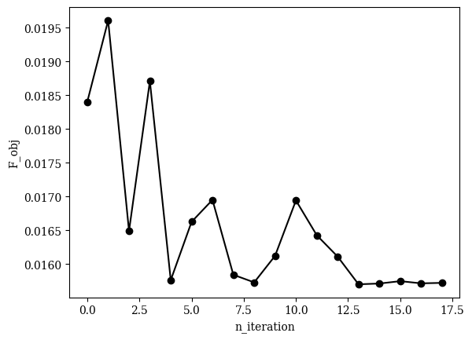
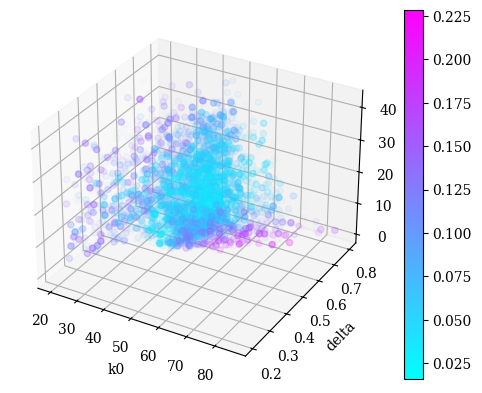

Exemplo de análise da estimação de parâmetros#
Ler resultado da estimação de parâmetros
[5]:
from modules.estimation.config.estimation_config import EstimationConfigModel
import pandas as pd
import pathlib
estimation_results_path = pathlib.Path("./out/estimation_exp_large_range")
target_results_path = pathlib.Path("./fixtures/validation/RochaData/num")
est_cfg_path = pathlib.Path("./fixtures/estimation_config.yaml")
estimation_cfg = EstimationConfigModel.from_file(est_cfg_path)
df = pd.read_csv(estimation_results_path / "estimation_results.csv")
df["A"] = df["p_ref"] * df["beta"]
df.loc[df["f_obj"] == df["f_obj"].min()]
[5]:
| sim_lbl | sim_id | f_obj | k0 | delta | beta | p_ref | A | |
|---|---|---|---|---|---|---|---|---|
| 6830 | sim_6830 | 6830 | 0.015703 | 47.601104 | 0.622641 | 0.04983 | 63.640954 | 3.171253 |
[6]:
from modules.analysis.results_handler import ResultsHandler
import matplotlib.pyplot as plt
best_simulation_id = df.loc[df["f_obj"] == df["f_obj"].min()]["sim_id"]
results_handler = ResultsHandler(simulation_path=estimation_results_path / f"sim_{best_simulation_id.to_numpy()[0]}")
target_positions = [0.005, 0.02, 0.03, 0.04, 0.06, 0.08, 0.12]
time, concentration_profiles = results_handler.filter_for_positions(variable_name="Concentration", position_values=target_positions)
for position_lbl, concentration_arr in concentration_profiles.items():
plt.plot(time / (3600 * 24), concentration_arr, label=position_lbl)
plt.xlabel('Tempo [Dias]')
plt.xlim(0,400)
plt.ylabel('Concentração')
plt.ylim(0.135,0.2)
plt.grid()
plt.legend()
plt.show()

Plot de convergência da função objetivo
[7]:
from modules.common.utils import create_folder_path
import matplotlib.pyplot as plt
plt.rcParams.update({
'text.usetex': False,
'font.family': 'serif',
})
n_interations = estimation_cfg.PSO.n_iterations
n_particles = estimation_cfg.PSO.n_particles
image_folder = estimation_results_path / "images"
create_folder_path(image_folder)
fig, ax = plt.subplots()
f_obj_arr = []
for i in range(n_interations):
filtered_df = df.loc[(df["sim_id"] >= i * n_particles) & (df["sim_id"] < (i + 1) * n_particles)]
if filtered_df.empty:
continue
f_obj_arr.append(filtered_df["f_obj"].min())
ax.plot([i for i in range(n_interations)][:len(f_obj_arr)], f_obj_arr, marker='o', label=filtered_df['sim_lbl'], color="black")
ax.set_xlabel(r'n_iteration')
ax.set_ylabel(r'F_obj')
fig.savefig(image_folder / "f_obj.png")
plt.show()
fig.clear()
plt.close()

Particles plot
[8]:
from modules.common.utils import create_folder_path
import matplotlib.pyplot as plt
n_interations = estimation_cfg.PSO.n_iterations
n_particles = estimation_cfg.PSO.n_particles
image_folder = estimation_results_path / "images"
create_folder_path(image_folder)
fig = plt.figure()
ax = fig.add_subplot(projection='3d')
df_cleaned = df.dropna()
colorbar = ax.scatter(df_cleaned["k0"], df_cleaned["delta"], df_cleaned["A"], marker='o', c=df_cleaned["f_obj"], cmap='cool', alpha=(1 - df_cleaned["f_obj"] / df_cleaned["f_obj"].max()) ** 10)
fig.colorbar(colorbar)
ax.set_xlabel('k0')
ax.set_ylabel('delta')
ax.set_zlabel('A')
fig.savefig(image_folder / "f_obj.png")
plt.show()
fig.clear()
plt.close()
